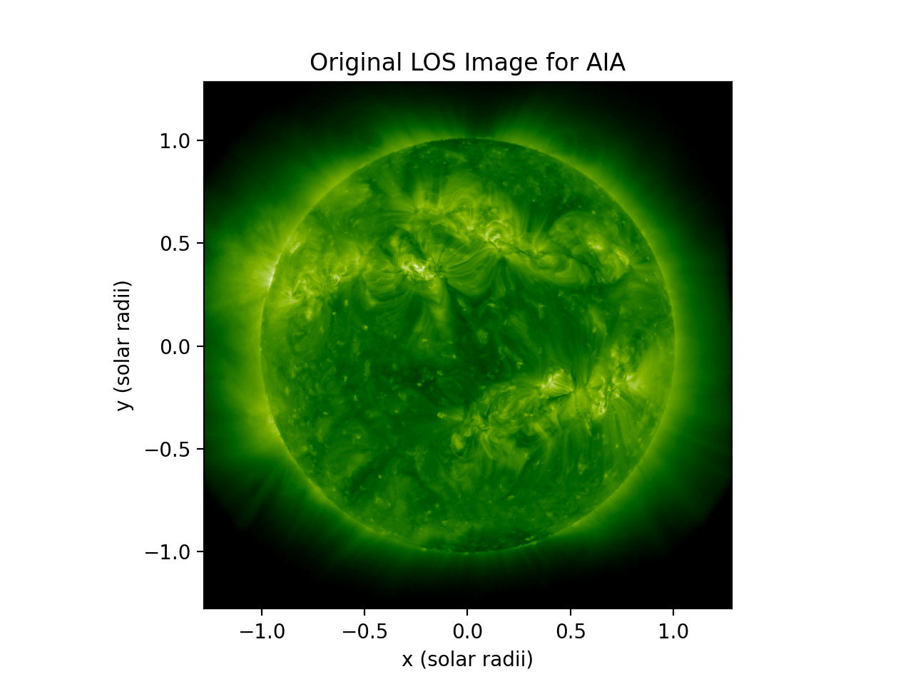
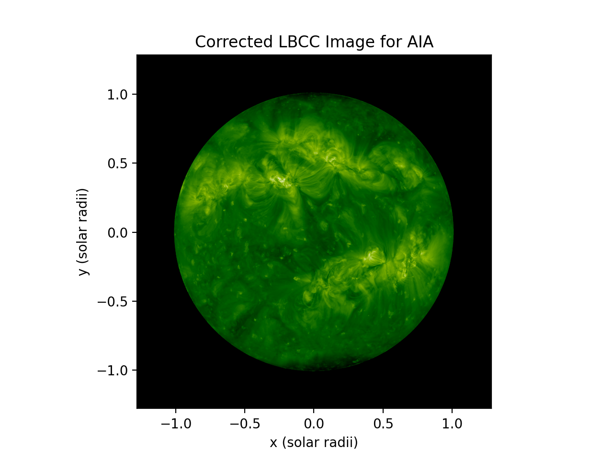
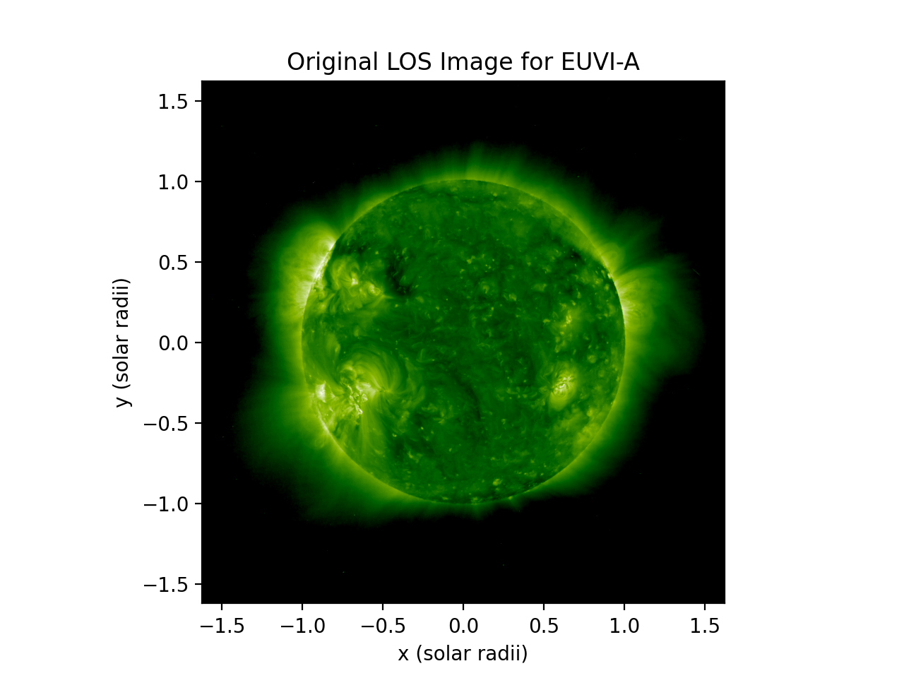
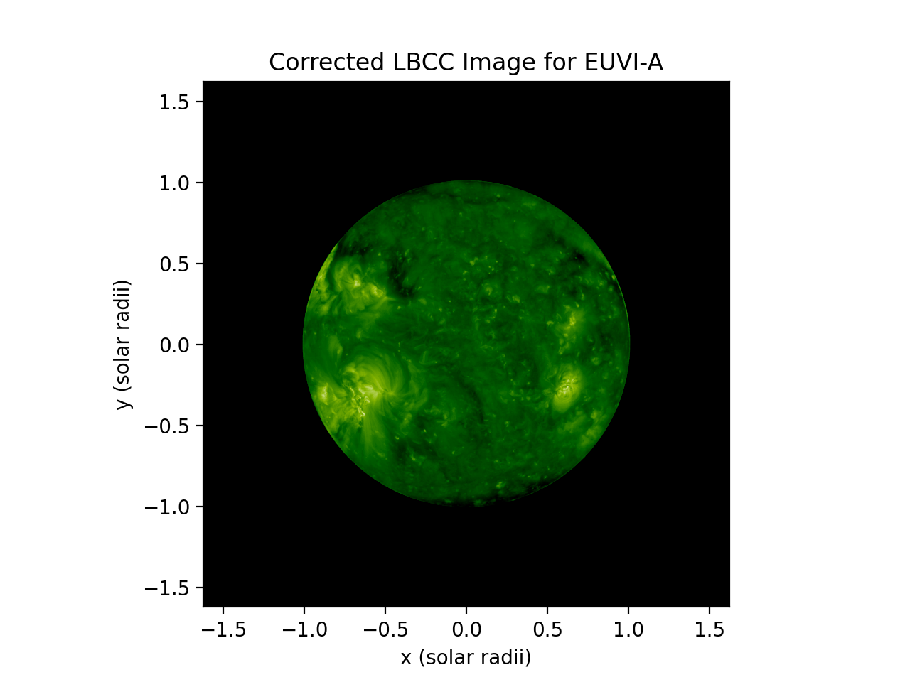
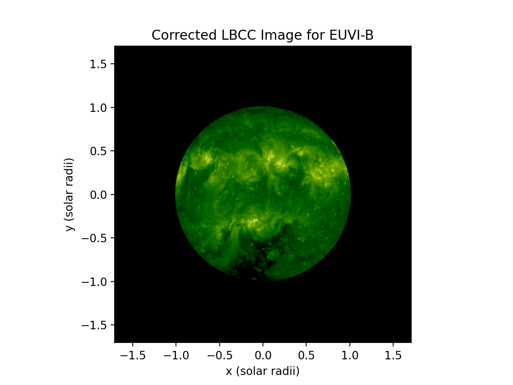

Limb-Brightening Correction
Limb Brightening Correction (LBC) is the second step in the data pre-processing pipeline. The goal of LBC is to correct for brightening of structures that is dependent on their distance from disk center. This process uses a theoretic model....
Examples of Corrected Images
AIA Images
| Original Image | Corrected Image |
|---|---|
|  |  |
EUVI-A Images
| Original Image | Corrected Image |
|---|---|
|  |  |
EUVI-B Images
| Original Image | Corrected Image |
|---|---|
 |
 |
Theoretical Analysis Pipeline
Compute Histograms
The source code for this is found in the CHD GitHub at:
analysis/lbcc_analysis/LBCC_create_mu-hist.py
def save_histograms(db_session, hdf_data_dir, inst_list, hist_query_time_min, hist_query_time_max, n_mu_bins=18,
n_intensity_bins=200, lat_band=[-np.pi / 64., np.pi / 64.], log10=True, R0=1.01):
"""
function to create and save histograms to database
"""
query_pd = db_funcs.query_euv_images(db_session=db_session, time_min=hist_query_time_min,
time_max=hist_query_time_max, instrument=query_instrument)
temp_hist = los_temp.mu_hist(image_intensity_bin_edges, mu_bin_edges, lat_band=lat_band, log10=log10)
hist_lbcc = psi_d_types.create_hist(hdf_path, row.image_id, mu_bin_edges, image_intensity_bin_edges,
lat_band, temp_hist)
db_funcs.add_lbcc_hist(hist_lbcc, db_session)
return None- 1.)
db_funcs.query_euv_images- queries database for images (from EUV_Images table) in specified date range
- 2.)
los_temp.mu_hist- creates histogram based on number of mu and intensity bins
- 3.)
psi_d_types.create_hist- converts histogram to lbcc_hist datatype
- 4.)
db_funcs.add_lbcc_hist- saves histograms to database (table LBCC_Hist) associating an image_id and basic information with histogram
Calculate and Save Theoretical Fit Parameters
The source code for this is found in the CHD GitHub at:
analysis/lbcc_analysis/LBCC_beta-y_theoretical_analysis.py
def calc_theoretic_fit(db_session, inst_list, calc_query_time_min, number_of_weeks=27, number_of_days=180, n_mu_bins=18,
n_intensity_bins=200, lat_band=[-np.pi / 64., np.pi / 64.], create=False):
"""
function to calculate and save (to database) theoretic LBC fit parameters
"""
pd_hist = db_funcs.query_hist(db_session=db_session, n_mu_bins=n_mu_bins, n_intensity_bins=n_intensity_bins,
lat_band=np.array(lat_band).tobytes(),
time_min=np.datetime64(min_date).astype(datetime.datetime),
time_max=np.datetime64(max_date).astype(datetime.datetime),
instrument=query_instrument)
optim_out_theo = optim.minimize(lbcc.get_functional_sse, init_pars,
args=(hist_ref, hist_mat, mu_vec, intensity_bin_array, model),
method="BFGS")
db_funcs.store_lbcc_values(db_session, pd_hist, meth_name, meth_desc, var_name, var_desc, date_index,
inst_index, optim_vals=optim_vals_theo[0:6], results=results_theo, create=True)- 1.)
db_funcs.query_hist- queries database for histograms (from LBCC_Hist table) in specified date range
- 2.)
optim.minimize- use theoretical optimization method to calculate fit parameters
- 3.)
db_funcs.store_lbcc_values- save the six fit parameters to database using function store_lbcc_values from modules/DB_funs
- creates image combination combo_id of image_ids and dates in Images_Combos table
- creates association between each image_id and combo_id in Image_Combo_Assoc table
- creates new method “LBCC Theoretic” with an associated meth_id in Meth_Defs table
- creates new variable definitions “TheoVar” + index with an associated var_id in Var_Defs table
- store variable value as float in Var_Vals table with associated combo_id, meth_id, and var_id
- save the six fit parameters to database using function store_lbcc_values from modules/DB_funs
Generate Plots of Beta and y Correction Coefficients
The source code for this is found in the CHD GitHub at:
analysis/lbcc_analysis/LBCC_generate_theoretic_plots.py
def generate_theoretic_plots(db_session, inst_list, plot_query_time_min, plot_number_of_weeks, image_out_path,
year='2011', time_period='6 Month', plot_week=0, n_mu_bins=18):
"""
function to generate plots of beta/y over time and beta/y v. mu
"""
theoretic_query[date_index, :] = db_funcs.query_var_val(db_session, meth_name,
date_obs=np.datetime64(center_date).astype(datetime.datetime), instrument=instrument)
plot_beta[mu_index, date_index], plot_y[mu_index, date_index] = lbcc.get_beta_y_theoretic_based(
theoretic_query[date_index, :], mu)
beta_y_v_mu[index, :] = lbcc.get_beta_y_theoretic_based(theoretic_query[plot_week, :], mu)- 1.)
db_funcs.query_var_val- query fit parameters from database
- 2.)
lbcc.get_beta_y_theoretic_based(theoretic_query[date_index, :], mu)- calculate beta and y correction coefficients over time using theoretic fit parameters and mu values
- used for plotting beta and y over time
- 3.)
lbcc.get_beta_y_theoretic_based(theoretic_query[plot_week, :], mu)- calculate beta and y correction coefficients for a specific week using theoretic fit parameters and mu values
- used for plotting beta and y v. mu for a specific week
Apply Limb-Brightening Correction and Plot Corrected Images
The source code for this is found in the CHD GitHub at:
analysis/lbcc_analysis/LBCC_apply_fit.py
def apply_lbc_correction(db_session, hdf_data_dir, inst_list, lbc_query_time_min, lbc_query_time_max, n_mu_bins=18,
R0=1.01, plot=False):
"""
function to apply limb-brightening correction and plot images within a certain time frame
"""
image_pd = db_funcs.query_euv_images(db_session=db_session, time_min=lbc_query_time_min,
time_max=lbc_query_time_max, instrument=query_instrument)
theoretic_query = db_funcs.query_var_val(db_session, meth_name, date_obs=original_los.info['date_string'],
instrument=instrument)
beta, y = lbcc.get_beta_y_theoretic_interp(theoretic_query, mu_array_2d=original_los.mu,
mu_array_1d=mu_bin_centers)
corrected_los_data = beta * original_los.data + y
Plotting.PlotImage(original_los, nfig=100 + inst_index, title="Original LOS Image for " + instrument)
Plotting.PlotLBCCImage(lbcc_data=corrected_los_data, los_image=original_los, nfig=200 + inst_index,
title="Corrected LBCC Image for " + instrument)
Plotting.PlotLBCCImage(lbcc_data=original_los.data - corrected_los_data, los_image=original_los,
nfig=300 + inst_index, title="Difference Plot for " + instrument)- 1.)
db_funcs.query_euv_images- queries database for images (from EUV_Images table) in specified date range
- 2.)
db_funcs.query_var_val- queries database for variable values associated with specific image (from Var_Vals table)
- 3.)
lbcc.get_beta_y_theoretic_interp- calculates beta and y arrays
- uses variable values from query in step two
- uses mu array from original LOS image
- uses mu_bin_centers array to calculate beta and y then interpolate for 2D mu array
- calculates beta and y arrays
- 4.)
corrected_los_data = beta * original_los.data + y- applies correction to image based off beta, y, and original data arrays
- 5.)
Plotting.PlotImageandPlotting.PlotLBCCImage- plots original and corrected images and difference between them